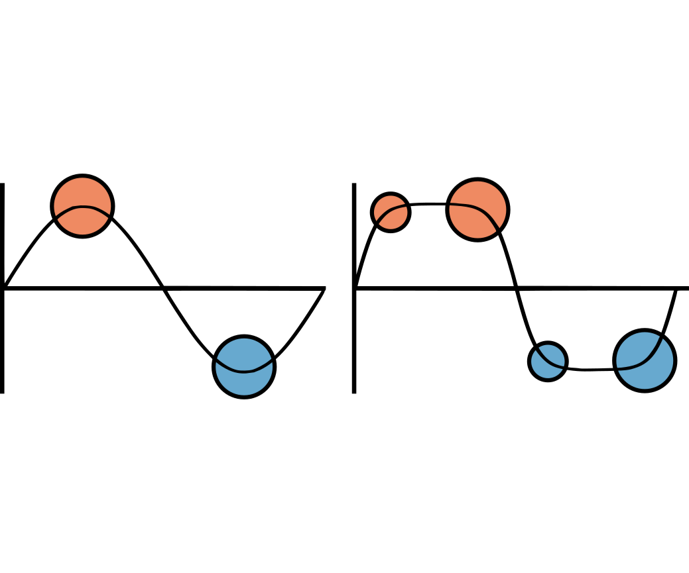

T. Van Buren, D. Floryan, D. Quinn, and A. J. Smits, Physical Review Fluids (2017), 2(5), 053101
For simplicity, most studies of swimming and flight consider sinusoidal flapping, but animals tend to have more complicated flapping motions. Here, we explore a range of flapping motions from triangular to square waves. Owing to their high peak flapping speed, square-wave motions greatly enhance thrust.
The impact of wave-form shape on the wake and propulsive performance of a pitching and heaving two-dimensional foil is explored experimentally. Jacobi elliptic functions are used to define wave-form shapes that are approximately triangular, sinusoidal, or square. The triangular-like and sinusoidal waves produce qualitatively similar wakes, with a typical reverse von Kármán vortex street structure leading to a jetlike wake in the mean. Square-like motions produce very different results, with a vortex pair shed every half cycle, leading to a mean wake with two distinct off-center jets, and a significant change in the thrust production, yielding up to four times more thrust for a given Strouhal number. Performance curves indicate that to swim most efficiently sinusoidal motions are best, whereas the square-like motions lead to higher speeds. A scaling analysis indicates that the peak lateral velocity appears to be the dominant parameter in characterizing the performance of the nonsinusoidal motions.